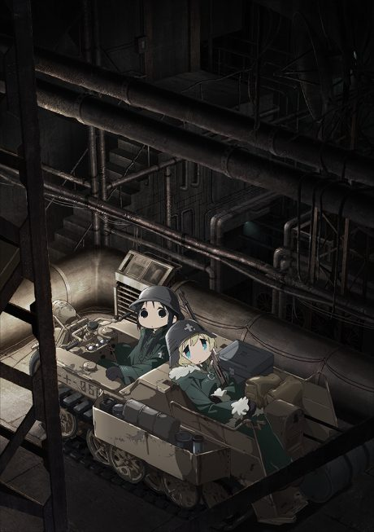
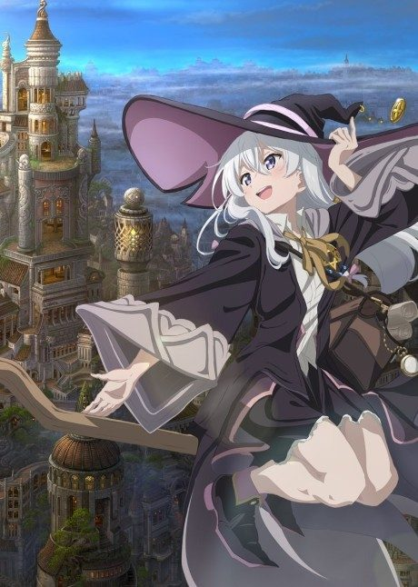

Train to the End of the World
終末トレインどこへいく？
Shizuru and three friends board a train to find their missing friend, in a world that has gone very strange.
An original anime, so there's no book to continue with.
7.2AniList score
—Animeter, no votes yet
12episodes
Rate it or report where you stopped
Is there a manga to continue?
StatusOriginal
An anime original, so there is no manga to pick up from.
Sources: AniList, MyAnimeList
More like Train to the End of the World
 Original8.4
Original8.4
 Original8.4
Original8.4
 Manga Ch. 819.1
Manga Ch. 819.1
 Manga Ch. 408.1
Manga Ch. 408.1

Manga Ch. 358.2
Unclear7.4
Manga Ch. 487.9
Yona of the Dawn Unclear8.0
Unclear8.0
 Manga Ch. 337.6
Manga Ch. 337.6
 Manga Vol. 37.4
Manga Vol. 37.4
 Original7.4
Original7.4
 Manga Ch. 228.7
Manga Ch. 228.7